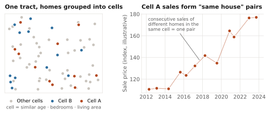
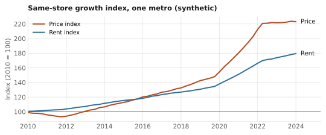
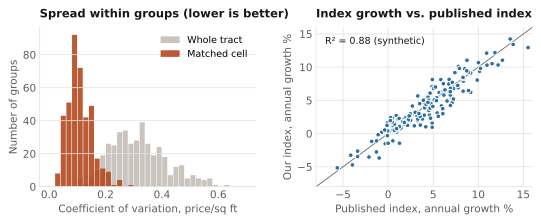
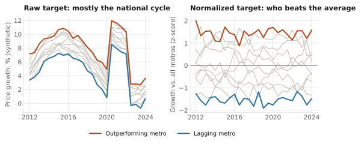
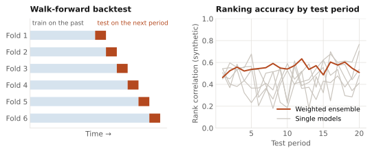
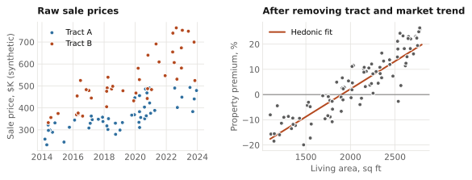
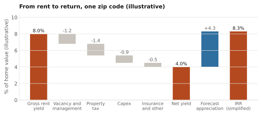
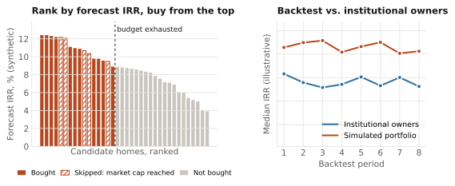

The problem
Build-to-rent and homebuilder deals need a defensible answer to one question: which zip codes will deliver the best yield and IRR? The data makes that hard. The same house rarely sells twice in a short window, most homes have not sold recently, and taxes, rents and upkeep costs vary county by county. No single model answers the question; it takes a chain of them that agree on the same data.
0 Data foundation
Everything downstream depends on clean, consistent inputs. Sales and lease records come from multiple sources, combined so the system covers the whole country rather than the markets any one source covers well. When our primary data provider overhauled its systems, I mapped the full schema change and moved five separate models from ad hoc notebook joins into one managed, validated pipeline with a monitoring tearsheet.
1 Measure growth: a same-store index
To measure how prices and rents really change, you need to compare the same house over time, but few homes sell twice. I built a synthetic "same house": comparable homes grouped together, whose consecutive sales act like repeat sales of one home.
Under the hood. Coarsened Exact Matching groups homes within a census tract by age, bedroom count and living area. A Case-Shiller-style repeat-measures regression on the resulting pairs produces a same-store growth index for prices and rents. It became the standard growth input across the firm's single-family work.


Validation. Two checks confirm the index measures what it should. First, matched cells must be tight: the coefficient of variation of price per square foot within each cell should be far lower than across the whole tract. Second, the index must agree with the market: its growth is compared with published house price indices on FRED, measured by R².

2 Forecast prices
This is where the investment edge comes from. The forecast has to say which metros will do better than others, not just whether the whole country goes up, and the ranking has to hold up out of sample. Three things make it reliable: it is trained on each metro's growth relative to all metros, it is judged only on rigorous walk-forward backtests, and it combines many models into a weighted ensemble so no single model's mistakes drive the ranking.
Under the hood. Gradient-boosted (LightGBM) models forecast growth for ~400 metros at several horizons, with the target normalized cross-sectionally at each point in time. Features are selected by out-of-sample performance, and feature groups are split across ensemble members so their errors are less correlated. Members are weighted by walk-forward backtest performance: each fold trains only on the past and scores the next period. A residualized short-horizon variant removes trend continuation so the model does not lean on momentum exactly when momentum breaks.


3 Value every home
Returns depend on today's price and rent for each home, including the many that have not sold in years. The valuation model estimates both for the full national universe every quarter.
Under the hood. A hedonic regression framework, fit with two gradient-boosted models (price and rent). Each target is measured relative to the home's own census tract over a trailing window and adjusted by the metro index, which separates what is specific to the property from the market trend. The model then explains that property premium from the home's features. Validation uses a five-year entry-to-exit backtest rather than in-sample fit.

4 Capex and tax assumptions
Rent is not return: owning a home costs money every year. Capital expenditure and property tax assumptions turn gross rent into what an owner would actually earn, so they are estimated from data for every home rather than set as flat rates.
Under the hood. Property tax uses the observed value from assessor records whenever a home has one. Where it does not, the rate is filled in from the most granular level with enough coverage: zip code, then metro (CBSA), then state. Capex is calculated from the available data and applied to homes of the same property type in the same region.
Output: yield and IRR by zip code
Growth, forecast, valuation, capex and tax chain into the numbers investors act on: expected yield and IRR for every zip code, refreshed each quarter.
Under the hood. Rent and price estimates set the gross yield; vacancy, management, property tax, capex and insurance bring it to a net yield; the forecast adds expected appreciation.

How it's used: portfolio simulation
To test whether the whole system picks good homes, I simulated how a buyer following it would have done. Candidate homes are ranked by forecast IRR and bought from the top until a fixed quarterly budget runs out. Real-world limits apply: the portfolio cannot take more than a set share of the available listings in any one market, so once a market hits its cap, the next-best homes elsewhere are bought instead.
The simulated portfolio is benchmarked against the realized returns of large institutional single-family owners over the same periods. Across the backtest periods, its median IRR tracked above theirs.

What it enabled
A single, systematic framework that ranks every zip code in the country by expected return, used directly in build-to-rent and homebuilder deal underwriting. Because I owned every stage, a change anywhere (a new data release, a model update) could be traced through to its effect on the final portfolio.
Skills
- System design
- Coarsened Exact Matching
- Case-Shiller repeat-sales index
- Hedonic regression
- LightGBM ensembles
- Walk-forward backtesting
- Automated valuation (AVM)
- Portfolio simulation
- Data pipelines